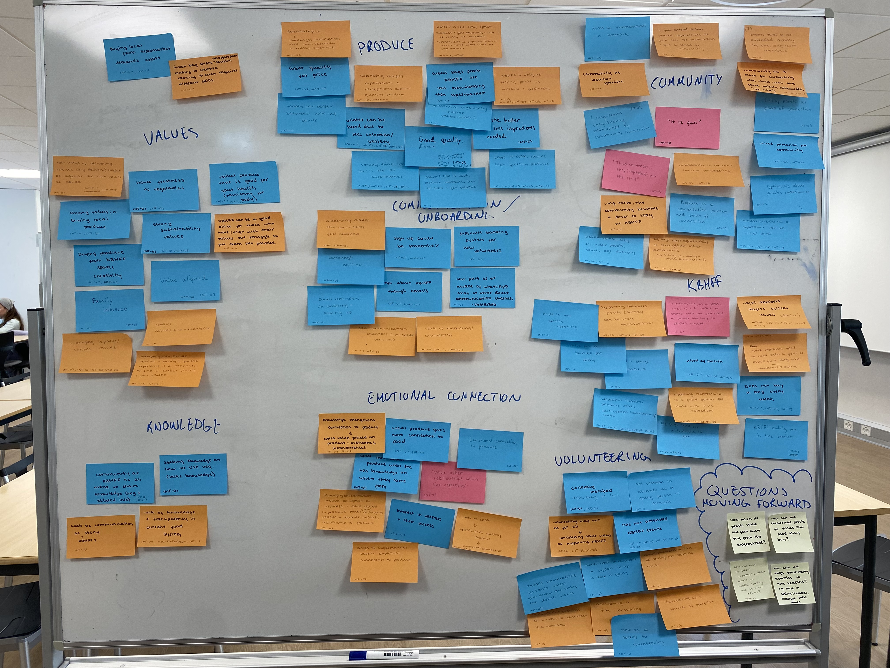
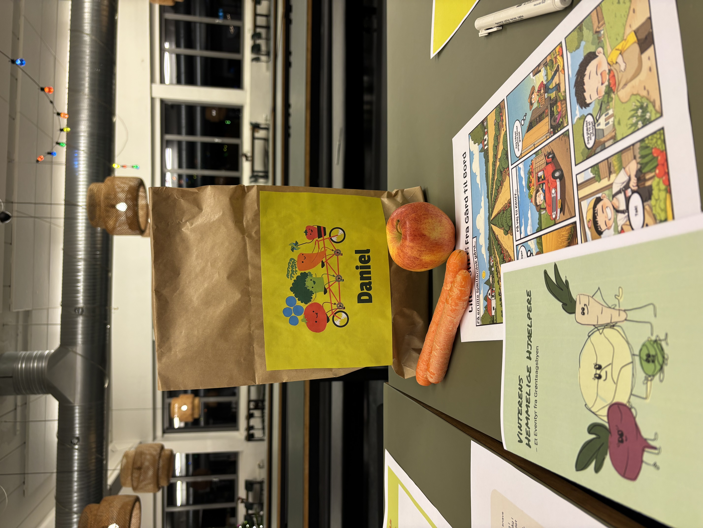

Lille KBHFF
Designing a family-oriented expansion of Copenhagen's food co-operative
1. The Problem
KBHFF, Copenhagen's member-owned food co-operative, asked us to redesign their service to attract younger members and secure long-term engagement. Most current members are women over 30, and the co-op was concerned about its future pipeline.
Our research surfaced a sharper version of that problem. Young members weren't missing. They were leaving when they became parents, shifting from active volunteers to passive supporting members because the co-op had no role for their children. Recruiting more young members wouldn't help if the underlying retention issue stayed unsolved. The opportunity was to retain the parents already there and use them as the bridge to the next generation of KBHFF members.
Reframed design challenge
How might we create meaningful, family-oriented ways to participate in KBHFF that both support parents and nurture the next generation's connection to its values?
2. The Process

We worked through the Double Diamond, renamed to reflect how we actually moved through it: Explore, Make Sense, Ideate & Prototype, Deliver. In practice the phases overlapped constantly. Field exploration kept feeding Make Sense, and Make Sense kept sending us back to the field.
The thread that held the messiness together was the research wall.
The wall started as a place to cluster observations from open-ended interviews and field exploration, but it quickly became something more active. Every new interview, walk-a-mile note, service safari observation, or workshop output went up on it, and every time we added something, the existing clusters had to be reread. Themes that looked stable shifted, faded, or fractured. Insights that initially sat at the edge moved to the centre once a third or fourth data point landed nearby.
This iterative, multifaceted analysis was what surfaced the tacit knowledge sitting underneath the brief. The patterns we cared about were not the loud ones. Members rarely said "I drifted away when I had kids", but the wall made that pattern visible by holding fragments of it next to each other: a parent volunteering with a child in tow at one department, an interviewee mentioning she "stopped having time" after her first child, a coordinator noting that supporting members rarely come back to volunteer once they've stepped away. None of those observations meant much in isolation. Together on the wall, they pointed somewhere specific.
The wall is also what gave us the confidence to challenge the brief. KBHFF had asked us to attract young members. The wall was telling us that the deeper problem was retaining young parents already inside the organisation. Reframing the brief was not an intuition. It was a conclusion the data made hard to avoid once we had laid it out properly.
From there, the wall became the reference point for everything that followed. The "How Might We" questions were drawn directly from clusters on the wall. The decision to pursue families over internationals or schools was checked against it. When prototype testing surfaced new findings, those went up too, and existing clusters were reread again.
The methods that fed the wall mattered, but the wall is what made them add up. Service safari across five departments, eleven open-ended interviews, a walk-a-mile immersion, semi-structured interviews paired deep-and-broad, an online facilitation workshop, and a competitor analysis all produced raw material. The wall is where that raw material became insight.
3. The Outcome
Lille KBHFF: an extension of the existing service that lets families participate meaningfully without disrupting how the co-op already runs.
The service has three integrated elements:
- The children's bag, a smaller, child-friendly bag of seasonal produce that children pick up themselves at their family's KBHFF department, giving them ownership over their own food
- Weekly creative materials, including recipes designed for children to cook with their parents, plus rotating creative prompts that connect the produce to play
- Seasonal storytelling, a comic and storybook produced once per season that introduces KBHFF's values (local, organic, seasonal eating) through narrative
A new volunteer group, the children's bag group, produces the materials one season ahead of time, working asynchronously within KBHFF's existing three-hour-monthly shift structure. This deliberately creates a more flexible volunteering pathway, addressing a separate insight from our research: KBHFF's existing volunteering model is largely Wednesday-bound, and that rigidity is part of why parents drop off.

Why it works
- Built on the existing system, not parallel to it. Lille KBHFF reuses KBHFF's ordering platform, distribution flow, and pick-up touchpoints, so the implementation cost is low and member routines aren't disrupted.
- Aligned with KBHFF's values. The service amplifies the emotional connection to produce that our research showed members already feel, and extends it to the next generation.
- Tackles retention, not just acquisition. It re-engages parents who had drifted into passive membership and gives their children a reason to grow up inside the co-op rather than around it.
- Validated, not assumed. Initial interest among parents is positive, early engagement among children is promising, and the backend was validated as feasible by KBHFF's coordinator.